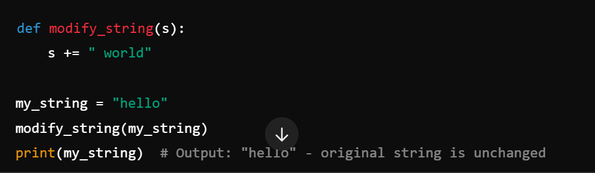

Introduction
In Python programming, understanding the concepts of mutable and immutable objects is essential. These concepts affect how data is stored, modified, and passed within a program. As developers, it’s crucial to grasp the distinction to avoid bugs, write efficient code, and make the most out of Python’s unique handling of objects. In this blog post, we’ll dive into what makes an object mutable or immutable, why this matters, and how this impacts the way Python treats these objects—especially when passing them as arguments in functions.
Object ID and Type in Python
In Python, every object has a unique ID and a type. The ID identifies the object’s location in memory, and the type defines what kind of object it is (e.g., int, float, list, dict). We can check an object’s ID using id() and its type with type().

IDs are particularly useful when working with mutable objects, as they help us track changes in memory addresses. It’s worth noting that when objects with the same value are created, immutable objects may have the same ID (due to Python’s optimizations), while mutable objects typically have different IDs unless explicitly assigned.
Mutable Objects
Mutable objects can be changed after they are created. Lists, dictionaries, and sets are examples of mutable objects in Python. When you modify a mutable object, the object itself is updated without creating a new object in memory.
Because mutable objects retain their ID, any modifications made to them are permanent within their current context. This can lead to unintended side effects if not handled carefully, especially when passing mutable objects into functions.
Immutable Objects
Immutable objects, on the other hand, cannot be altered once created. Examples include integers, strings, and tuples. When you try to change an immutable object, Python creates a new object in memory with the modified value instead of modifying the original object.
This behavior is beneficial in cases where data integrity is crucial, as immutable objects cannot be changed unexpectedly.
Why Does It Matter?
Python’s distinction between mutable and immutable objects affects everything from memory usage to performance and data safety. Knowing this difference helps you choose the right data structures for your program. Mutable objects are great when you need flexible data, but immutable objects provide stability and can optimize certain operations. Understanding this also helps prevent unintended modifications to objects, especially when working in collaborative environments or larger codebases.Argument Passing: Mutable vs. Immutable Objects
When passing arguments to functions, Python passes objects by reference. For mutable objects, this means that changes made within the function affect the original object. Immutable objects, however, behave differently; any attempt to modify them results in a new object being created. This distinction is critical for avoiding bugs in programs where functions might unintentionally alter data. By understanding how Python treats mutable and immutable objects in functions, you can prevent unwanted side effects and ensure that data is handled as expected.